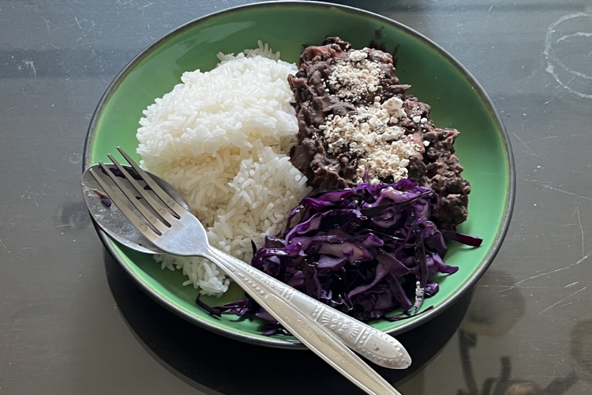

______________________________________________________________________________________________________
______________________________________________________________________________________________________
เป็นที่เชื่อกันอย่างกว้างขวางว่าว่าจุดเริ่มต้นของข้าวหน้าสตูว์ถั่วดำบราซิลเริ่มมาจากการทาสในบราซิล ที่ำเศษถั่วและเนื้อสัตว์ที่เหลือจากเจ้าของมารวมกันเพื่อมาทำเป็นสตูว์ชนิดหนึ่ง
ถึงกระนั้น นักวิชาการเพิ่งบอกว่าทฤษฎีนี้นั้นเป็นเท็จ โดยอ้างว่าต้นกำเนิดของข้าวหน้าสตูว์ถั่วดำบราซิลมาจากผู้ตั้งถิ่นฐานชาวยุโรป
______________________________________________________________________________________________________
เมนูนี้เป็นสตูว์ที่มีถั่วดำและเนื้อสัตว์ต่างๆ โดยอาหารจานนี้ต้องทำในปริมาณที่มากและยากต่อการแช่ตู้เย็นข้ามคืน
เพราะนั้นฉันจึงแนะนำให้ทำสำหรับกลุ่มรับประทาน และไม่แนะนำให้ทำกินคนเดียว
______________________________________________________________________________________________________
______________________________________________________________________________________________________
เคล็ดลับ: แนะนำให้ใช้เนยผัดเนื้อ
หมายเหตุ: ฟาโรฟา คือแป้งมันสำปะหลังผัดจนเป็นผง โดยฟาโรฟานั้นใช้ในอาหารบราซิล
เคล็ดลับ: แป้งมันสำปะที่ผัดจะมีกลิ่นเหมือนแป้งไหม้ในตอนแรก ซึ่งไม่ต้องกังวลเพราะต้องรอให้เย็นลงซึ่งสำคัญมาก
______________________________________________________________________________________________________